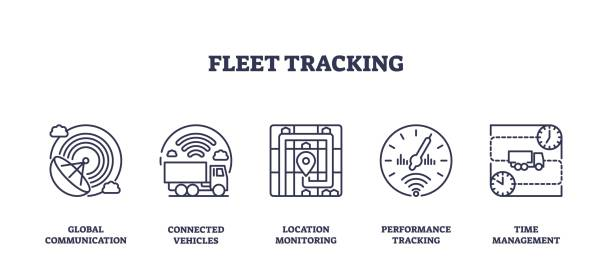

Visual Insights Gallery
Explore sample visualizations that showcase how transport data is transformed into meaningful dashboards and reports.

Monthly Operational Summary
Fuel Efficiency & Route Heatmaps

The Data-Driven Decision Making tool empowers logistics and transport leaders to transform raw data into actionable strategies. By leveraging analytics, this system improves how decisions are made across fleet operations, compliance, performance, and cost-efficiency.
The Data-Driven Decision Making tool empowers transport leaders and operations teams to act based on facts, not guesswork. Here’s how it makes a difference:
Transforms data into meaningful actions that optimize fuel use, route efficiency, and fleet readiness.
Enables long-term strategic planning based on trends, metrics, and real-world fleet behavior.
Helps reduce operational waste by identifying underperforming routes, vehicles, or habits.
Centralizes KPIs and analytics in one interface — accessible to leadership and operational teams alike.
Practical ways transportation industries apply data-driven strategies for better outcomes.
Use delivery data to reduce delays, optimize routes, and improve turnaround times across the board.
Analyze congestion and service patterns to improve fleet utilization and customer satisfaction.
Track usage data and breakdown history to shift from reactive to predictive maintenance.
Monitor behavior trends to prevent violations and ensure safety standards are upheld.
Below are selected snapshots of real-time dashboards, analytics tools, and data displays used in transport decision-making.
Explore sample visualizations that showcase how transport data is transformed into meaningful dashboards and reports.
Built to deliver clarity, speed, and precision — this data-driven platform offers unique value in transport and logistics operations.
Replace spreadsheets and guesswork with clean, easy-to-understand visual summaries that reveal key trends at a glance.
Make quicker decisions with data that's updated in real-time — allowing for prompt responses to challenges as they arise.
Stay ahead of regulatory issues by using automated alerts and compliance dashboards tailored to transport regulations.
Adapt the tool to your organization’s specific needs with scalable dashboards and flexible reporting formats.
Industry leaders recognize the power of real-time analytics and predictive data in reshaping modern transport operations. Here’s what they’re saying:
“Data-driven systems are redefining transport efficiency — enabling companies to shift from reactive firefighting to proactive planning.”
“The visual clarity offered by dashboards like this allows operations teams to pinpoint performance gaps at a glance.”
“Maintaining transport regulation standards has never been easier — visual insights reduce oversight risks significantly.”
Built with reliable, scalable, and flexible tools that make data visualization seamless and responsive.
Structured semantic markup for performance and accessibility.
Responsive and modern layouts styled to fit corporate use.
Flexible formats for structured data integration and parsing.
Powerful library for rendering charts, graphs, and visual indicators.
For fetching and displaying real-time metrics and trends.
Compare operations before and after the use of Data Visualizer.
It supports CSV, Excel, and real-time transport APIs for data input. You can also manually upload datasets related to fleet performance, route logs, and driver metrics.
No, the dashboard is built for non-technical managers too. It's user-friendly and doesn’t require prior analytics experience.
Yes. The platform allows you to export visual reports in PDF or image formats for use in presentations or executive meetings.
The tool is designed for real-time web use. However, once data is loaded, basic offline access is available in the browser cache.
Download a sample analytics report generated with the Data Visualizer to see how insights are structured.
📄 Download PDF ReportThe Data-Driven Decision Making platform is not just a dashboard — it's a strategic advantage. By transforming raw numbers into clear insights, it empowers transport and logistics teams to operate with foresight, accountability, and agility. In today’s fast-paced logistics environment, visibility and responsiveness are critical. This solution delivers both.
From real-time visual reports to predictive planning and incident tracking, every component is designed to simplify complexity and drive operational excellence.